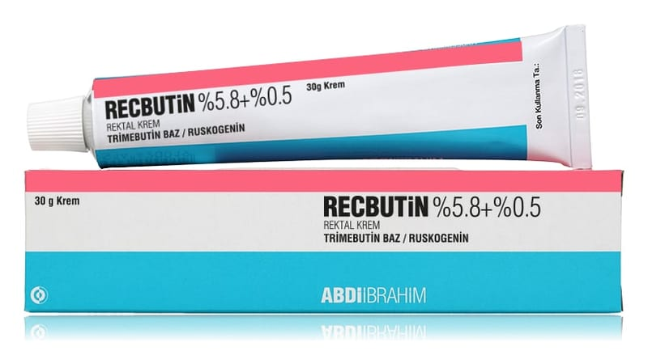

Recbutin % 5.8 + % 0.5 Rektal Krem, 30 g

Ne için kullanılır
KT · Bölüm 1RECBUTİN 30g.’lık alüminyum tüplerde kanül ile birlikte takdim edilen beyaz veya sarımsı beyaz renkte, homojen görünüşlü, gözle görülür kirlilik içermeyen kremdir.
Etken madde olarak antispazmodik (spazm giderici) olan trimebutin ile venotonik (damarların tonunu arttıran) ve vasküloprotektif (küçük kan damarlarının direncini arttıran) etkileri olan ruskogenin içerir.
RECBUTİN hemoroid (basur) krizleri sırasında ağrılı ve kaşıntılı anal (makat) belirtilerin ve fissürlerin (makat çatlağı) semptomatik tedavisinde kullanılır.
Bu ilacı kullanmaya başlamadan önce bu KULLANMA TALİMATINI dikkatlice okuyunuz, çünkü sizin için önemli bilgiler içermektedir.
• Bu kullanma talimatını saklayınız. Daha sonra tekrar okumaya ihtiyaç duyabilirsiniz. • Eğer ilave sorularınız olursa, lütfen doktorunuza veya eczacınıza danışınız. • Bu ilaç kişisel olarak sizin için reçete edilmiştir, başkalarına vermeyiniz. • Bu ilacın kullanımı sırasında, doktora veya hastaneye gittiğinizde doktorunuza bu ilacı kullandığınızı söyleyiniz. • Bu talimatta yazılanlara aynen uyunuz. İlaç hakkında size önerilen dozun dışında yüksek veya düşük doz kullanmayınız.